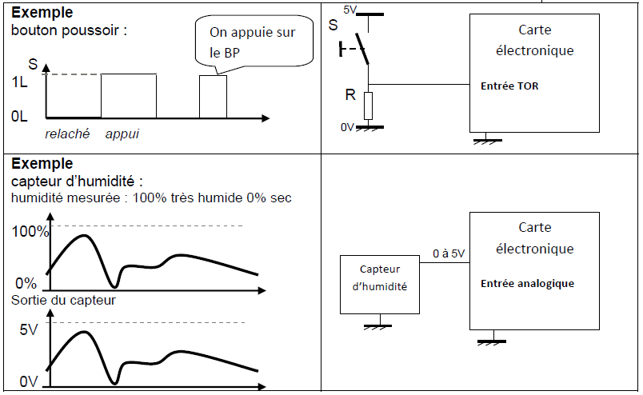

1. Un bouton poussoir change d'état
2. Un capteur détecte la présence d'un objet (ex capteur de présence d'une personne)
3. Un capteur détecte qu'un volet roulant arrive en position haute
4. Un capteur indique la température d'un fout (entre 0°C et 230°C précison 0.1°C)
5. Un capteur indique la proximité d'un objet (entre 0 et 50 cm précision 1mm)
6. Un capteur indique le taux d'humidité (entre 0% et 100%)
Les 3 premiers cas donnent une information binanire en Tout ou rien (TOR). L'information est soit vraie (true) ou fausse (false) on dit aussi 0L ou 1L.
0L corresponxd à 0 volt 1L correspond à 5 volt
Les 3 derniers donnent une information analogique qui "suit" le signal
Le signal peut prendre toutes les valeurs entre 0V et 5V (ex 0.341V ou 4.02V)
1. Allumer ou étendre une LED (si la sortie et à 1L, la LED s'allume. 0L éteint la LED)
2. Mettre en marche un moteur (moteur de pompe = arrosage en cours)